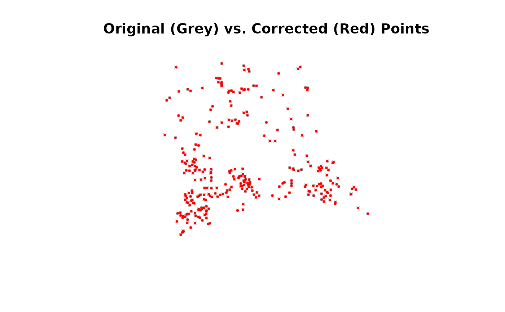

Applies a trained pai_model object to an sf vector map,
correcting the position of all its vertices based on the learned
transformation.
Arguments
- pai_model
An object of class
pai_modelreturned bytrain_pai_model().- map
An
sfobject representing the vector map to be corrected.- aoi
An optional
sfpolygon object representing the Area of Interest. If provided, the transformation is only applied within this area.
Details
This function is the final step in the PAI workflow, applying the learned
spatial correction to a target map. It uses a robust feature-by-feature
iteration that correctly handles all standard simple and multi-part geometry
types (POINT, LINESTRING, POLYGON, etc.).
If an Area of Interest (aoi) is provided, the transformation is only
applied to the parts of the map features that fall within the aoi polygon.
The features outside the aoi are kept in their original, untransformed
state.
Examples
# This example demonstrates a full workflow with POINT geometry.
# --- 1. Load Data and Train Model ---
data(gcps) # gcps is an sf object with POINT geometry
gam_model <- train_pai_model(gcps, pai_method = "gam")
#> Training 'gam' model...
# --- 2. Apply the Model to Correct the Points ---
corrected_points <- apply_pai_model(gam_model, gcps)
#> Applying PAI model to map features...
#> Correction complete.
# --- 3. Inspect and Visualize ---
# The coordinates of the corrected points should be different.
head(sf::st_coordinates(gcps))
#> X Y
#> [1,] 268828.1 4488391
#> [2,] 268684.7 4488627
#> [3,] 268710.3 4488347
#> [4,] 268509.3 4488540
#> [5,] 268516.0 4488406
#> [6,] 268840.4 4488505
head(sf::st_coordinates(corrected_points))
#> X Y
#> [1,] 268828.3 4488391
#> [2,] 268684.9 4488627
#> [3,] 268710.2 4488347
#> [4,] 268509.6 4488540
#> [5,] 268515.7 4488405
#> [6,] 268840.7 4488505
# Visually confirm the points have moved
plot(sf::st_geometry(gcps), col = 'grey', pch = 4, cex=0.5,
main = "Original (Grey) vs. Corrected (Red) Points")
plot(sf::st_geometry(corrected_points), col = 'red', pch = 16, cex=0.5, add = TRUE)
